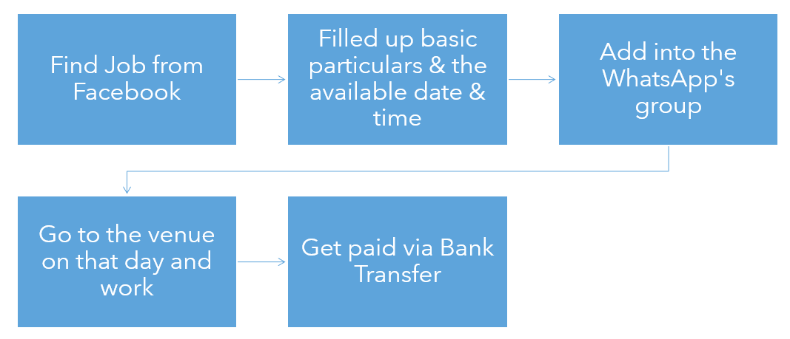
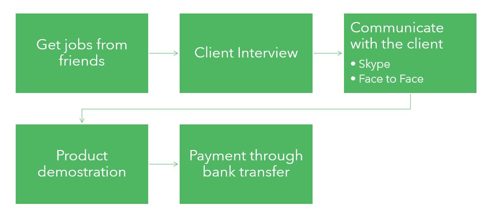
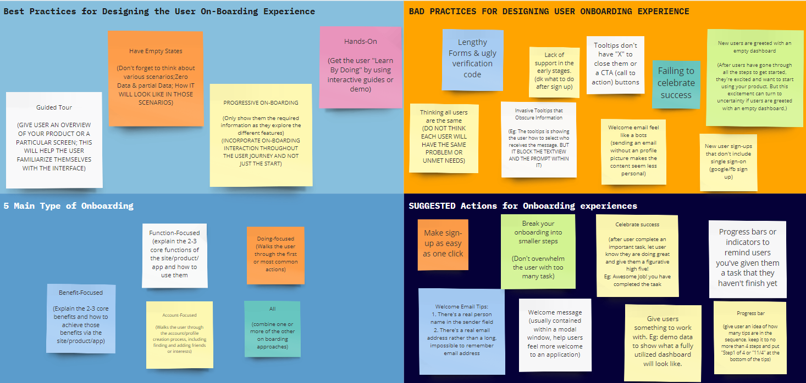
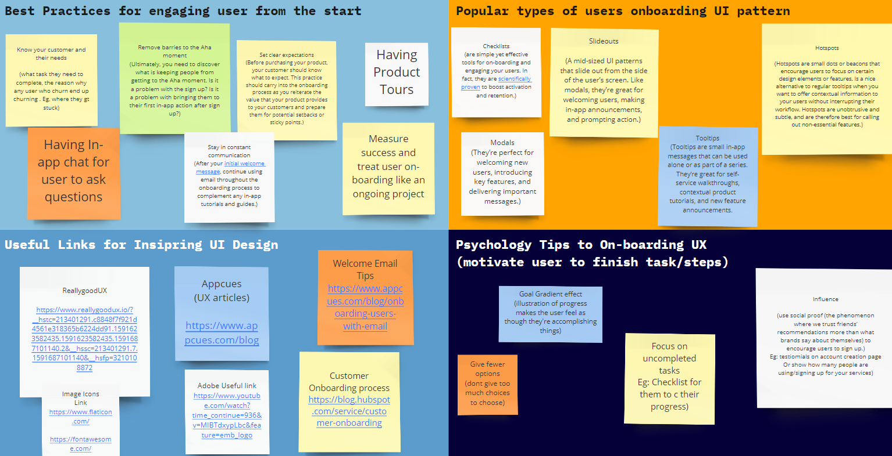
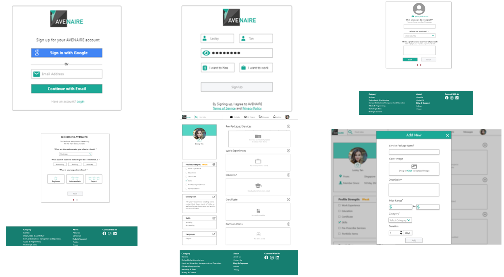
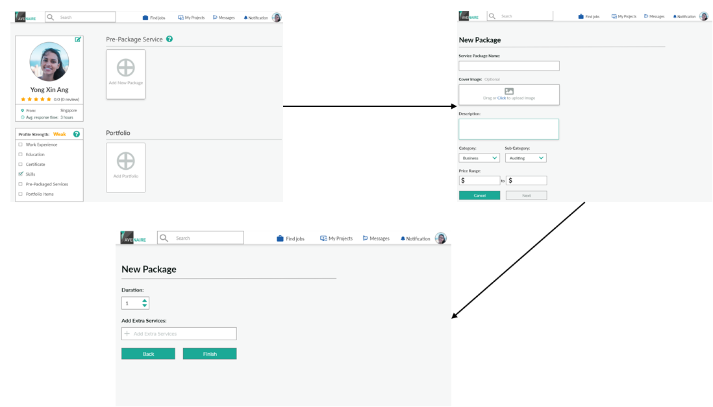
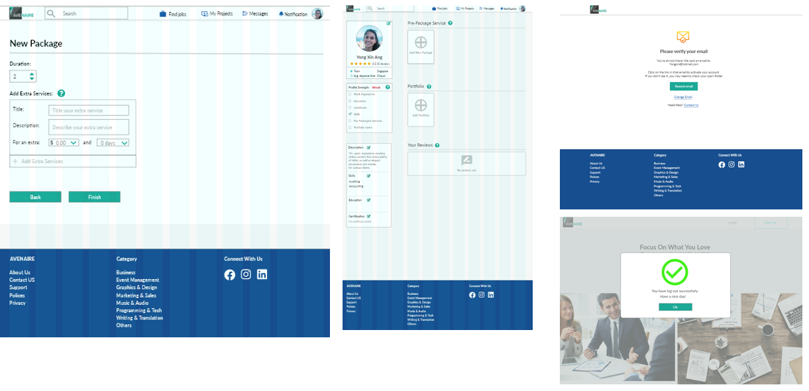

Prototyping a freelancer website - UX Case Study
This article shows the process of how i develop prototype in my 3 months of UX mentorship
Introduction
Avenaire is a new Software-as-a-Service platform which enables event planners to find and collaborate with freelancers that enables event planners to find and collaborate with freelancers, while empowering freelancers with skills listing, project searching, schedule management and escrow payment.
This was a project given to me as part of my 3 months UX mentorship assignment.
Problem
Despite creating social media for the company to attract attention, the number of responses was not ideal. Thus, Avenaire was curious about how freelancer offers their service to their clients.
My Role
My role in this project was to undertake user research and drafting out a mid-fidelity prototype on the Sign-Up & Service Offering Process for Avenaire.
Goal
How might we improve the user’s experience, so we can attract more users to use our platform.
Process
In my entire desing process, I basically divide it into 3 stages: User Research, Ideation & Rapid Prototyping, Usability Testing & Iterate Prototype
User Research
To find out more about the current problem that users normally faced and how freelancer offers their service, I conducted 3 user interviews, 4 online surveys and did a competitors analysis with the top 3 freelancer website to get a rough idea on the current problem that user is facing when using their interface. I generated a report to summarise all my findings.

How they offer their service using social media

How they offer their service to their friends
Ideation & Rapid Prototyping
To enhance the user experience when using the interface, I did a small research on creating a good onboarding experience for the users. I consolidated all the best and bad practices when comes to creating an onboarding experience for the users.


Onboarding experience moodboard

Recommended practices for onboarding experience
Wireframes
Based on the findings, I used Adobe XD to create a semi-low fidelity wireframe and have a design critique session with my mentor.This design critique session helped me to have a better understanding of what I am lacking in my designs and able to improvise it before conducting usability testing with real users.

Semi-low fidelity wireframes
Prototype
Based on the initial semi-low fidelity wireframe and the feedback that was given from my mentor, I further developed the structure to an interactive mid-fidelity prototype, showcasing the Sign-Up and the Service Offering Process.


Prototype for Usability Testing
User Testing Results & Insights
After conducting usability testing with 5 different users, I learned a lot about the strength & weaknesses of my prototype. Although there is a 100% success rate in completing the task and able to achieve a good rating( 8/10) for my prototype. I realize that 60% of the testers were still unsatisfied with the profile page and 40% of the testers were confused by the extra service fields. With the insights I gained from the usability testing, I further developed and finalized the mid-fidelity prototype for Avenaire.

Some snapshot of the final prototype
Click Here to have a bettter visual of my prototype.
My Takeaways
In the past, conducting user interviews & usability testing was something that I feel not important at all. After conducting a few interviews and usability testing sessions, I realize that both processes are quite essential to any kind of project. It helps me gain more insights into how people behave and how should I design my prototype to solve the problem. Although the entire process may seem simple and quite normal for the UX designers, a lot of own research needs to be done to excel in it. I read more than 40 articles just to gain more design insights for my research and prototyping. You may think it is insane, but I feel it is quite fulfilling. Everyone should try to do UX research on one project, and I can guarantee you that you will learn a lot in the entire project process.